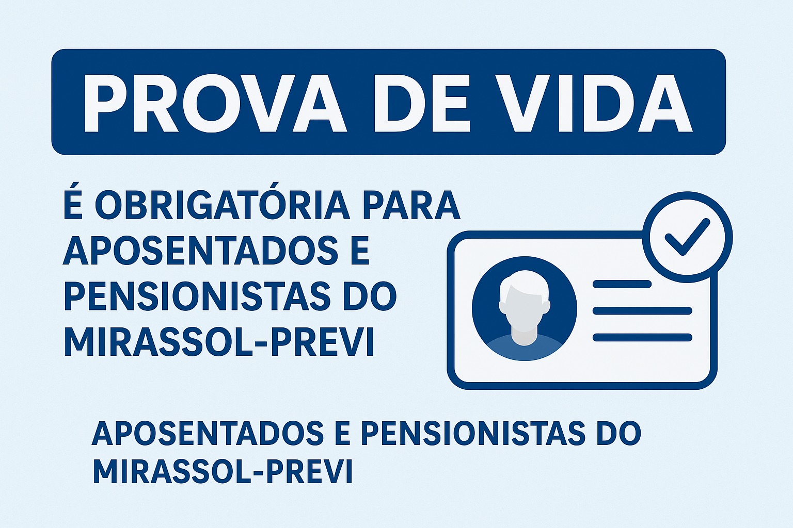

Prova de Vida é Obrigatória para Aposentados e Pensionistas do Mirassol-Previ
A partir de 1º de agosto de 2025, entrou em vigor o Decreto nº 5.146/2025, que regulamenta a obrigatoriedade da Prova de Vida anual dos aposentados e pensionistas vinculados ao Regime Próprio de Previdência Social (RPPS) do Município de Mirassol D’Oeste – o Mirassol-Previ.
📅 Quando fazer?
A Prova de Vida deve ser realizada anualmente, no mês de aniversário do beneficiário, com prazo máximo de 30 dias a contar do primeiro dia do mês de aniversário.
🧾 Quem deve fazer?
Todos os inativos (aposentados) e pensionistas do Mirassol-Previ.
🛑 E se não fizer?
O não cumprimento da Prova de Vida no prazo resultará na suspensão do pagamento do benefício. A reativação ocorrerá após a regularização, com pagamento retroativo processado no mês seguinte.
📍 Como fazer?
A Prova de Vida pode ser realizada de duas formas:
✅ Presencialmente:
Na sede do Mirassol-Previ:
📍 Rua Juscelino Kubitschek, nº 3182, Centro
🕒 Atendimento: Segunda a sexta-feira, das 07h às 13h
📱 Digitalmente:
Por meio do aplicativo “Meu RPPS”, disponível para Android e iOS.
- Instale o app na loja de aplicativos.
- Escolha o estado “MATO GROSSO” e a cidade “MIRASSOL D’OESTE”.
- Selecione o instituto “MIRASSOL-PREVI”.
- Faça login com seu CPF e senha ou crie um cadastro.
- Acesse o menu “Prova de Vida” e siga as instruções para enviar os documentos e foto facial.
📎 Documentos Necessários:
- Documento oficial com foto (RG ou CNH – frente e verso)
- Foto facial capturada na hora (com boa iluminação e sem acessórios)
- Para pensionistas: declaração de vida e residência (modelos disponíveis no decreto)
Em caso de impossibilidade médica ou reclusão penal, o representante legal poderá realizar o procedimento mediante documentos específicos.
📞 Dúvidas ou atendimento:
- WhatsApp: (65) 99800-2383
- E-mail: mirassolprevi@mirassoldoeste.mt.gov.br